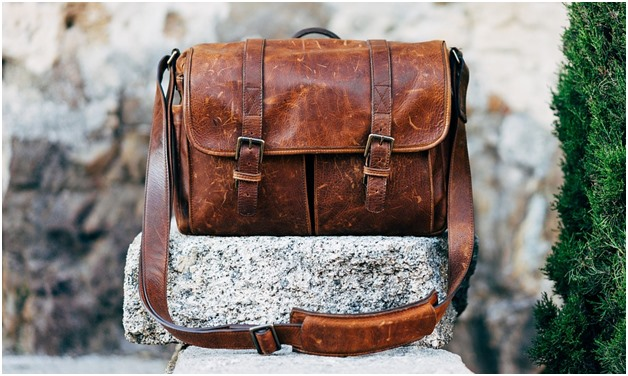

Whether it’s furniture or personal accessories, buying genuine leather items requires thoughtful consideration. As you are going to invest considerable funds into buying these products, you must know the answers to two key questions:
- “How do you identify the best leather?”
- “Where do you buy it?”
While making the final decision is ultimately up to you, the details provided in this leather guide will surely help to push you in the right direction. But, before we dig deeper into various types, qualities, and features, let’s first take a glimpse at the history of the leather industry and how it has developed over time.
Leather Industry
Leather tanning has been around for centuries. It’s one of the oldest industries in human civilization. Indians, Egyptians, Greeks, Chinese, and Mesopotamians had developed several different tanning processes centuries before industrialization. Leather was used to make intricate clothing articles such as footwear, gloves, and armor. It was also used to make buckets, bottles, and even weapons. The Industrial Revolution brought all kinds of new technological advances that made the leather-making process highly efficient, environment-friendly, and hygienic.
The leather industry in the United States dates back to the colonial times. It grew with the population throughout the 18th century. By 1750, there were more than 1000 tanneries in the country. The number swelled to more than 8000 by 1840! At the time, the primary leather activity was shoemaking. In 1850, over 11,000 shoemaking establishments were operating in the U.S.
U.S. Leather Industry
U.S. hides and skins companies, which include producers, processors, brokers, and dealers, export more than 90% of the total leather inventory. The U.S is one of the top raw material suppliers to the global leather manufacturing industry. The value of industry exports is worth nearly $3 billion dollars annually.
In 2016, the hide, skin, and leather industry exported more than $2 billion in cattle hides, pigskins, and semi-processed leather products.
Global Leather Goods Market
- According to the Global Leather Goods Market 2017-2021 Report, conducted by Technavio analysts, the global leather market is expected to grow at a compound annual growth rate (CAGR) of almost 5% from 2017-2021.
- In 2017, the total market value was $217.49 billion. It is expected to reach $271.21 billion by 2021.
- This segment is expected to represent an incremental growth of more than $53.72 billion during the forecast period.
- The sub-segment of global footwear market was worth $126.99 billion in 2016.
- In 2016, the Americas registered the highest leather revenue of $83.67 million.
Types of Leather
The quality of leather varies greatly. You have most likely seen different labels on leather items, such as top grain or genuine. These are simply different types of leathers based on their quality. If you want to get the best bang for your buck, you not only need to know where to buy leather, you also need to know how to distinguish between different types. You will need to understand why some materials last longer than others and why a particular leather bag costs thousands, while others cost a fraction of that price.
So, what is the best leather? The best quality leather will depend on these important factors, most notably:
- Type of animal and breed
- Physical location and climate where the animal lived
- Portion of the hide the leather was cut from (see diagram below)
- Layer of the hide that is used (top grain, full grain, split)
- Quality and skill of the processing and tanning
Different breeds of cows will produce different quality hides due to their genetics and environment. Hot climates tend to have insects that bite the animal and leave scars whereas cold climates don’t suffer from pests as much. Certain breeds might have more protective hair or thicker skins due to the weather.
Different portions of the hide also yield different quality leather. For instance, the lower portion, as shown in the diagram above, tends to have looser fibers that make up the hide. The looser fibers sponge and swell when wet. Lower portions of the hide also tend to get marked much easier from insects and scrapes like barbed wire fencing. There are also more wrinkles in the hide around the legs, neck and head. These scars and wrinkles become permanent and are almost impossible to remove in the processing of the leather.
Different layers within the hide also have an enormous impact on quality. Full grain leather and top-grain are the best. See our in depth focus on the grain vs split just a few paragraphs further down to know which portion you are buying.
Finally, knowing exactly how to take a raw hide and process it through tanning and finishing is a sought after skill and will influence the quality of the final product significantly. Italian leather is admired for this very reason – as Italian leather artisans are considered amongst the most skilled in the world.
In general, there are four types of leather. These include Full Grain Leather, Top Grain Leather, Corrected Grain Leather, and Bonded Leather. Take a look at the picture below. See how the fibers run both horizontally and vertically in different parts of the hide.
Buying leather with more horizontal fibers wears out quickly because they can readily pull apart. Vertically running fibers, however, are the strongest. In other words, the higher the number of vertical fibers, the better.
A. Full Grain Leather
Full grain leather comes from the top layer of the hide. It includes all the grain with it – hence the name full grain leather. This type of leather retains the inherent toughness, as well as the imperfections because there are no surface alterations or splitting.
It is the highest quality leather and the only one suitable for saddleback. Thus, it is also the most expensive. Working with this leather material is challenging. It absorbs body oils and develops a patina over time – a characteristic that attributes to its popularity.
B. Top Grain Leather
Top grain is the second highest grade of leather. Usually, to obtain top grain leather, the top layer of skin from blemished hides is split. The surface is sanded to get rid of inherent imperfections. Pigmentation or staining gives the leather an attractive look.
This also makes top grain leather smoother and more flexible than the full grain. Although this type of leather is strong and durable, it tends to stretch permanently over time. It is used to produce suede and nubuck. Most high-end products, such as handbags and jackets, are comprised of top grain leather.
C. Corrected Grain (Bottom Cut/Split) Leather
Corrected grain leather, also known as genuine leather, is produced using the skin layers that remain after the top is split off. Just like the top grain leather, it is also sanded to remove natural imperfections. Usually, the surface is spray painted and embossed with a leather-like pattern to resemble natural appearance. However, the processing alters the inherent breathability of the leather.
D. Bonded Leather
Bonded leather is made up of leftovers of the hide. This includes the dust and shavings. These are bonded together using polyurethane or latex on top of a fiber sheet. It is often spray-painted to look like full or top grain leather. You can’t determine the percentage of natural leather unless the manufacturer chooses to disclose it – which is very unlikely. Bonded leather is the lowest (and the cheapest) grade of leather.
Though there are four basic types of leather, you can find a wide range of options based on the percentage of organic material, durability, and the finishing process.
Aniline Leather: This is the most natural leather with a minimal resistance to soiling. It requires regular upkeep.
Semi-Aniline Leather: Semi-aniline leather consists of a light surface coating with a small amount of pigment. Thus, it is stronger than aniline leather but maintains its natural look. It also exhibits stain resistance to some extent.
Antique Grain Leather: This one is comprised of a unique surface processing that resembles the ragged appearance of conventional leather. It is also called distressed leather.
Chrome-Free Leather: This type of leather uses aldehyde tanning, which, just like vegetable tanning, does not use chromium. Hence it is called chrome-free. Usually, it is used to make infant shoes and automobile accessories.
Chrome Tanned Leather: Most leather manufacturers use chromium salts (chromium sulfates) for the tanning process instead of vegetable tanning. Though chrome tanned leather is thinner and softer than vegetable tanned leather, the process is not considered environmentally friendly.
Corrected Grain Pigmented Leather: Usually, imperfections are removed by abrading the grain surface before applying the coating. A decorative grain pattern is embossed to render a natural look.
Pigmented Leather: A polymer surface coating, containing certain pigments, is applied to produce the desired look and properties. Due to its durability, pigmented leather is often used to make furniture and car upholstery.
Embossed Leather: Embossed leather is imprinted with artificial leatherwork for a certain grain design or pattern.
Finished Split Leather: Usually, the middle or lower section of a hide is used to produce this leather. It is coated with a polymer and embossed to resemble a more natural look.
Good Hand Leather: This is a softer leather. As it feels pleasant to the touch, it is known as good hand leather.
Kidskin Leather: This one is made from the hide of young goats.
Latigo: Latigo is cowhide leather specifically designed for outdoor use. It is usually found in cinches, ties, saddlebacks, and army accouterments.
Nubuck Leather: Nubuck leather is sanded on the grain side to create a velvety appearance. Usually, aniline dyed leather is used to produce nubuck leather.
Oil Tanned Leather: Oil-tanned leather is produced using oils to create a remarkably smooth and flexible finish.
Pebble Grain Leather: The top side of such leather mimics a pattern of small pebbles.
Printed Leather: The printed leather is often stamped with a design or texture to create a unique look.
Pull-Up Leather: Pull-up leather, or oily pull-up leather, stretch over time and provides a unique worn-in effect. It is considered a sign of high quality.
Skirting Leather: This is the leather often used to manufacture saddles and bridles. Skirting leather is made from the sides of cattle hide.
Suede:Suede is the most popular leather with a napped finish. It is used to make jackets, shoes, shirts, purses, and furniture.
Tooling Calf Leather: Tooling calf is a thin, lightweight, vegetable-tanned leather. It is suitable for printing and engraving.
Waxy Hand Leather: Waxy hand leather comes with a grease or wax finish. It is often used to make upholstery, shoes, and handbags.
Leather Processing
Leather tanning is a complex and lengthy process. Though mechanization has made it less labor intensive, it still consists of a complex series of treatments that require considerable time and energy. The purpose of the tanning process is to alter the protein structure of the skin to increase its durability, texture, and appearance.
As mentioned earlier, there are many varieties of leather. However, all types of leathers have to go through four fundamental stages. This includes preparatory steps, tanning, re-tanning, and finishing. Sometimes, a further sub-process of surface coating may be added to the process. Before sending to the tannery, the animal skin needs to be cured. Although curing is not considered a part of the tanning process, it is the first crucial step in obtaining leather.
Usually, the animal is killed and skinned before the body heat leaves the tissues. The freshly removed skin or hide is immediately cured with salt to remove water. The skin is allowed to remain in the shade until it is completely dry. The cured skin or animal hide is then transported to the tanneries for further processing.
A. Preparatory Steps
The cured skin or animal hide needs to be prepared for the tanning process. Although there are various preparatory processes, the purpose of each process is to remove unwanted raw skin components. The tannery may not perform all of them, depending on the quality and type of the desired product.
1) Soaking
At this stage, the cured hide is soaked in water for several hours to several days. This process not only restores the moisture lost during salting, but helps to remove dirt, debris, blood, and excess animal fats.
2) Fleshing
This process removes subcutaneous material from the flesh side. The pelt is passed through a machine to remove the fat, muscle, and flesh mechanically. Usually, this process takes place after slaughter, soaking, or liming. At this stage, or after tanning, hides may be split into different layers.
3) Un-hairing
Hair is removed at this stage using mechanical instruments such as rollers and blades.
4) Pickling
This process involves cleaning and soaking the rawhide in acids or salts to prevent decomposition. It helps the penetration of tanning agents such as chromium and aldehydes. Stronger pickling agents are used to preserve hides for several months.
5) De-Pickling
The hide is soaked in sulfuric acid to lower the pH after pickling.
6) Liming
This process loosens the fibers and allows the skin to absorb various tanning chemicals. Usually, sodium sulfide and hydrated lime are used to treat the hide, as they remove keratinous material such as hair and wool. Fats get hydrolyzed as the pH increases. Water is absorbed into the skin fibers, resulting in a swollen skin structure.
7) De-Liming
In this process, the hide is washed with a mixture of water and ammonium chloride or ammonium sulfate. This removes water (along with any impurities) to reduce swelling.
8) Bating
Bating marks the end of the liming process. The flaccid skin is treated with proteolytic bating enzymes to remove non-fibrous proteins. It cleans the grain and makes the pelt smooth and silky.
9) De-Greasing
Sometimes, water-based solutions and solvents are used to remove excess grease or natural fatty acids from the skin.
10) Bleaching
Chemical agents are used to making the hide colorless to add the desired color at a later stage.
B. Tanning
The primary purpose of this process is to produce a non-decomposable and sturdy material from the raw animal hide, called leather. Essentially, tanning converts the protein of the rawhide into a durable material. The most common tanning processes include mineral tanning, vegetable tanning, and glutaraldehyde tanning.
1) Vegetable Tanning

Vegetable tanning has been around for thousands of years. Unlike mineral tanning, it uses a naturally occurring polyphenol astringent chemical called tannin. This is usually found in bark, leaves, and branches of trees such as oak, chestnut, or mimosa. As it produces shades of deep brown, beige, yellow, and red, tannin lends a unique color and texture to the leather.
However, the process is time-consuming, laborious, and expensive. There are two types of vegetable tanning processes. The slow process takes about 30 days, while the rapid tanning process only lasts about 36 to 48 hours. Sometimes, however, the slow process can take several months, as it may require multiple treatments.
This process produces highly durable leather. So, the vegetable tanned leather is often used to make products such as saddles or holsters. The unmatched durability and distinct appearance makes this leather suitable for imprinting and intricate leatherwork such as tooling.
2) Mineral or Chrome Tanning
Mineral or chrome tanning is the most popular tanning process because it’s much quicker, affordable, and less labor intensive than the others. In 1858, it was introduced as an alternative to the expensive and time-consuming vegetable tanning process. The process can be automated and lasts a day at most. Usually, the time for chromium tanning is around 2 or 3 hours for small and thin skins. However, it can go up to 24 hours for thicker ones obtained from cattle.
The size of chrome molecules is small compared to vegetable tannin ions. As a result, chrome ions can penetrate the collagen and remove water molecules effectively. That’s why chrome tanned leather is thinner and softer than vegetable tanned leather. Chromium (III) sulfate is the most efficient and effective tanning agent. Chrome tanned leather is also called wet blue leather due to its bluish color.
However, the chrome tanning process creates a negative environmental impact as it comprises heavy usage of acids and other chemicals. The toxic waste can seep into groundwater and contaminate drinking water supplies. The resulting environmental implications are a major concern, especially in developing countries.
3) Aldehyde Tanning
This tanning process uses glutaraldehyde or oxazolidine compounds. It is also called wet white leather due to its pale cream color. Aldehyde tanned leather is water absorbent, soft, and can be machine washed. It is, therefore, perfect for use in chamois.
4) Oil Tanning
Sometimes, emulsified oils are blended with aldehyde chemicals to produce exceptionally soft and flexible leather. This process is called oil tanning.
C. Re-Tanning
Re-tanning converts the tanned leather into a marketable product. The choice of chemicals used in this process depends on the desired color and texture in the final product.
1) Drying
At this stage, the tanned leather is pressed between two rolling cylinders to remove the water absorbed during the tanning process.
2) Shaving
This process removes flesh residues and creates uniformly thick leather. The leather passes through two rolling cylinders where the upper one is provided with helical blades.
3) Splitting
A splitting machine slices the thick leather into one or more horizontal layers. Sometimes, this process is also carried out after liming. The top grain layer is the most expensive leather. It is used to make high-end leather merchandise. The layer without grain is used to make suede leather. Sometimes, an artificial grain surface can also be applied to it.
4) Dyeing
With the exception of vegetable tanned leather, all types of leather are dyed. More often than not, water-soluble dyes are used, allowing the dye molecules to penetrate inside the fibers. Thus, it differs significantly from surface coating where dye is applied only on the top layer.

5) Fat Liquoring
Fat liquoring, or stuffing, consists of adding fats, oils, or waxes between fibers to keep the leather soft and flexible. Without this process, the leather will dry and become stiff.
D. Finishing
This is the final stage where finishing touches are added to the tanned leather – as per the desired end product. This includes color, texture, thickness, and surface patterns.
1) Polishing
A velvet wheel rubs the leather to create a shiny surface.
2) Embossing
The process of embossing obtains a three-dimensional print using heated hydraulic or roller presses.
3) Surface Coating
The surface coating process adds color and different designs to leather. As per the customer requirement, resins, pigments, and dyes are added in layers to the surface using a variety of techniques such as spraying, roller-coating, curtain-coating, or hand coating.
4) Final Grading
Finally, the leather is graded before it is dispatched to the customers. Grading is often based on a variety of factors such as the feel of the leather, color, pattern, thickness, softness, and flexibility.
Leather For Furniture
One of the most popular leather item categories is furniture. High-quality leather furniture can last for years. However, each type comes with unique characteristics. In other words, you need to choose the right type of leather to get the most out of your furniture. Hopefully, this quick leather furniture buying guide will help you.
Full Grain Leather
As mentioned before, this is the most expensive and high-end leather out there. It is also the best for furniture because it retains a natural look and texture. The leather is treated with transparent aniline dyes to keep the original look. The texture is a little rough in the beginning but softens over time. However, this type of leather furniture requires a lot of maintenance, as it is susceptible to sunlight and absorbs liquids readily.
Top Grain Leather
Top grain leather is also suitable for furniture. This type of leather is softer than the full grain leather and comes with the same durability. Top-grain leather furniture comes in two different categories: aniline and semi-aniline. While aniline leather recliners may look natural, they remain susceptible to stains. Semi-aniline leather furniture, on the other hand, is relatively less susceptible because it can be treated with a protective topcoat. This type of leather furniture is also expensive. At Octane Seating, we primarily use top grain leather on all portions of the seating that you will touch. This means the seat back, seat cushion, armrests, and footrest - all utilize top grain. We then use a perfect synthetic PU match (see below) on the exterior sides and the exterior seat back. The synthetic match on those portions of the seat is an excellent choice given that those are the portions that will get scratches, dirt, and nicks. The synthetic cover is easy to clean and maintain in areas like that on the furniture.
Split Grain Leather
Though split grain consists of 100% leather, it lacks the smooth texture and stylish appearances with natural variations in color and pebbling. Some people may not think of it as the best leather for furniture, as it is relatively difficult to maintain.
Bonded Leather
Bonded leather is the most sought-after leather for furniture because it offers the look and texture of leather for the cheapest price. Usually, it only consists of about 17% leather obtained from various scraps rolled up together using an adhesive material. Unlike the full grain leather furniture, it will never become smooth with age.
Nubuck Leather
People tend to confuse nubuck leather with suede because they both have a velvet-like surface. However, unlike suede (obtained from split leather), nubuck is produced from the full grain leather. This type of leather is lightly brushed or abraded to create a velvet-like plush nap. It is considered the best leather for furniture due to its soft, velvet-like touch and natural look. Though it is more durable compared to suede, nubuck leather furniture requires high maintenance, especially the velvety fur. You should avoid buying nubuck leather furniture if you have pets.
Bi-Cast Leather
Bi-cast leather is manufactured by blending split-hide leather or composite leather substrate and a coating of colored polyurethane. Thus, it looks like top grain leather, only it is a lot cheaper. Just like bonded leather furniture, it also lacks the wear or comfort attributes of top-grain leather. It doesn’t have the durability people often associate with top grain leather furniture, either. So, before buying bi-cast leather furniture, make sure you understand the pros and cons related to it.
Faux Leather
Faux leather is a great choice for furniture upholstery, especially if you are an animal lover. Though it is no match for high-end full grain leather furniture, faux leather furniture is durable and can last longer. It is also affordable, less prone to cracks and peels, can withstand scratches, is not susceptible to sunlight, and is stain resistant. Thus, it can be an economical and low maintenance alternative to natural leather.
Polyurethane (PU) vs Polyvinylchloride (PVC) Furniture
When it comes to buying leather furniture, people often use the terms polyurethane (PU) and polyvinyl chloride (PVC) leather interchangeably. However, they are distinctly different. You must understand this difference if you want to get the best bang for your buck while purchasing leather furniture.
1) Polyurethane (PU) Leather
- Polyurethane leather is composed of polyurethane, bicast, or ground leather. Thus, it closely resembles natural leather.
- It provides a soft and flexible seating surface.
- It offers better breathability (vapor transmission), compared to PVC leather.
- The high-performance PU leather can quickly adjust to body temperature. It can remain cool even after sitting for long periods of time.
- However, it is susceptible to direct sunlight and humidity. Prolonged exposure can make it brittle.
- It comes with high abrasion resistance, durability, and inherent stain resistance.
- It is not naturally flame resistant. But, resistants are often added during the manufacturing process.
- Though it is more economical than natural leather, polyurethane upholstery tends to be expensive compared to PVC leather furniture.
2) Polyvinylchloride (PVC) Leather
- Though polyvinylchloride (PVC) resembles the softness, color, and texture of natural leather, it doesn’t contain natural leather at all.
- It is very durable and inherently flame resistant.
- It has a relatively better resistance to cleaners and disinfectants, compared to PU leather.
- Affordability and an excellent variety of color, texture, and grain are the primary reasons why this leather is the most popular one out there.
[](https://www.octaneseating.com/wp-content/uploads/2017/12/PVC-chart-1.jpg)
How to Identify Genuine Leather
Buying leather can be a challenging task. There are not only different types of leather but also different types of synthetic leather. Manufactures and leather shop owners are finding new ways to sell synthetic leather disguised as genuine. Fortunately, there are a few simple tips on how to buy genuine leather.
1) Check the Label First
The first thing you should do before trying any of the following tricks is to check the label. Most high-end leather product manufacturers will proudly give you information about the type of leather they have used to make the merchandise.
Most leather products have labels indicating different types, such as ‘genuine leather’ or ‘full grain leather.’ If you see dubious labels such as ‘manmade material’ or ‘made with animal products’, chances are, it’s not genuine leather. Avoid buying leather furniture or accessories without any tags. It’s a sure shot sign the manufacturer is trying to conceal the authenticity of leather.
2) Feel the Texture
Just run your fingers over the leather to feel its texture. As genuine leather comes from animal hide, it will have a varying or uneven texture. If the surface grain feels extra smooth, chances are, it is faux leather.
3) Look for Imperfections
Genuine leather exhibits an inconsistent surface pattern having minor imperfections. In other words, scratches, creases, and wrinkles are an indication of genuine leather

4) Warmth
Remember, genuine leather comes from hiding, which at some point, belonged to a living animal. That’s why genuine leather begets a cozy and warm feeling to your touch. Faux leather, however, feels cold and lifeless.
5) Elasticity
Just like any animal skin, genuine leather changes color when stretched and has better elasticity. If you press your finger firmly against natural leather, it will wrinkle under pressure. But, it will regain the original quickly. Faux leather, however, will retain the shape of your finger for a while.
6) Smell
Real leather has a distinct leathery smell. It retains the smell even after going through the tanning process. The synthetic leather material, on the other hand, smells like plastic.
7) Rough Edges
Whether you are out shopping for leather recliners or handbags, they will always have rough or coarse edges. As genuine leather is made of several layers, the edges often fray over time. Faux leather products, however, have smooth edges.
8) Moisture
Unlike its synthetic counterparts, natural leather readily absorbs moisture. Splash a drop of water on your leather merchandise. If it soaks up the water in seconds, chances are it’s a genuine leather item.
9) Fire Test
You have to execute this test carefully, as it will damage a part of your leather accessory. You can do this test on a hard-to-see area, such as the underside of your leather recliners. Burn the designated area using a matchstick. Genuine leather will slightly char and produce a distinct smell of burnt hair, while faux leather smells of burning plastic.
10) Check the Cost
Irrespective of how hard you bargain, genuine leather will always be expensive. When it comes to leather shopping, there are no cheap deals.
11) Understand Different Types of Leather
The more you know about leather, the better. So, try to understand as much you can about the different types. When in doubt, refer to this guide.
Wrapping It Up
Even the smallest things made of genuine leather are quite expensive. So, you have to put a lot of thought into buying leather products, big or small. The cost, quality, and aesthetics of leather depending on various aspects including the type of animal hide, tanning process, and finishing touches. Hopefully, this guide will address all your concerns from understanding leather grades and manufacturing processes to identifying and buying genuine leather. How about you? Have you purchased leather furniture or accessories recently? Share your experience in the comments section below.
![微信分享二维码]()